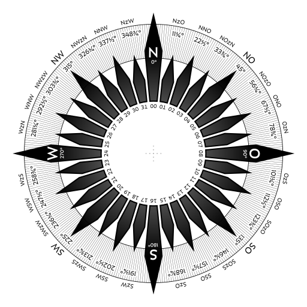
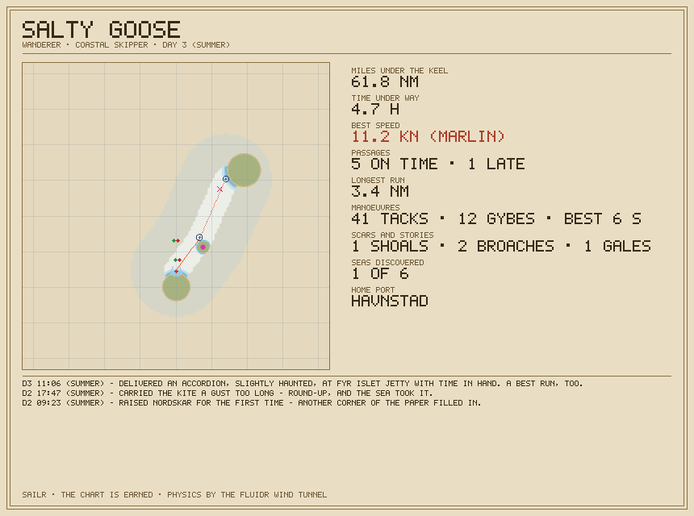
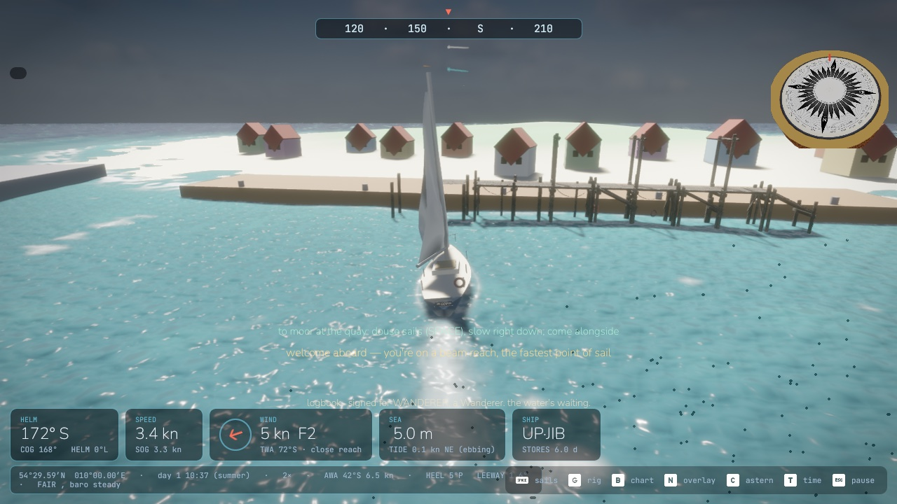

— it feels like sailing because it is —
sailr is the simple joy of small-boat sailing: reading gusts on the water, timing a tack just right, ghosting past a lee shore with a hand's width to spare. underneath sits a seriously strong physics engine — so when the boat rewards you, you earned it.
read the water
gusts darken the surface before they arrive, and every island casts a real, computed wind shadow. locals win races.
you steer, the crew trims
no sail micromanagement unless you want it — the crew trims to the boat's real polar. easy to start, a lifetime to master.
honest consequences
carry the kite a gust too long and you'll round up. reef late and you'll wish you hadn't. nothing punishes — the logbook just remembers.
— the engine room —
the game is a thin, cosy layer over a research-grade toolchain. if these words mean something to you, welcome aboard:
— five hand-authored seas —
— five boats, zero hand-tuned stats —
polar diagrams and figures on every boat card are solved live by the wind tunnel's vpp. a twitchy training dinghy, an honest cruising sloop, a carbon flyer, a tanbark cutter that shoulders through anything, and a cat that hates tacks.
upwind VMG 4.1 kn @ 31° · beam 6.2 kn · run 4.5 kn

— the logbook writes itself —
every tack, broach, grounding and gale, narrated in the log's own voice. a rank ladder, twelve feats, fog-of-war charts that stay earned per career — and a voyage card to show for it.

took command of TERN — a Wanderer — off the Havnstad quay.
delivered an accordion, slightly haunted, at Fyr Islet jetty with time in hand. a best run, too.
carried the kite a gust too long — round-up, and the sea took it.
the biscuit tin rattles — stores are running low.
— real generated lines, not marketing copy.
— ⛵ support the voyage —
sailr is one developer's nights and weekends — and player wishes are the roadmap. if the logbook has given you a story worth retelling, the patreon keeps her sailing.
backer wishes go up the mast first.
and if you just want to help make it a better game: wishes, wreck reports and weird physics stories are all welcome — open an issue or drop into the harbor talk. every one gets read.

five seas, an honest wind, and a logbook waiting for its first line.
unzip and keep assets/ next to the binary.
macos builds are unsigned — right-click → open, and you're in.